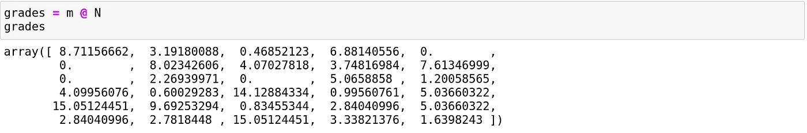
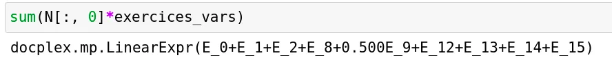
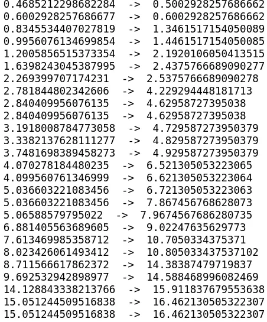

Setting the points per question of a test automatically
How to use a linear program to select the grading scale of an exam that is both meritocratic and encouraging
As a young teacher, I recently had to give my first exam, and so I had to score my first papers, but before scoring them, I had to define for each question how many points it would be worth.
I found myself trying multiple rating scales repeatedly to find one that stimulates meritocracy while allowing for overall good grades.
But then I noticed that a rating scale is a weighted sum, so finding a rating scale could be seen as an optimization problem; I then decided to design a way to automate this scaling by using Linear Programming and the solver CPLEX from ILOG.
Problem statement
The first thing I had to do was to correct the papers without a grading scale. To do so, I created a CSV file that has for each student and each question a float between 0 and 1 that represents the degree to which I judge that it has answered the question.
After that, I used Pandas to get the marks of each question and each student in a matrix as follows:
import pandas as pdimport numpy as npimport matplotlib.pyplot as pltdf = pd.read\_csv("TME\_Grades.csv")N = df.values.T #I Transpose because initially i Had a table with #the students in the rows and the exercices in the columns.
Consider that we have n questions and m students, and let N be the (n,m) matrix that gives us the "relative score" of a student in a question.
The problem could be finding a set of weights W of size n such that W.N gives the students' marks.
Let's start by seeing how we create our model and our variables.
from docplex.mp.model import Modelmodel = Model("Exam\_Scoring")exercices\_vars = model.continuous\_var\_list(keys = np.arange(N.shape[0]), name= lambda k:"E\_"+str(k))
The function "continuous_var_list" is given a list of keys; in our case, it's the number between 0 and the number of questions minus 1.
After we created the variables needed, let's think about the constraints we want to implement, some of the constraints we want to have are intuitive; the set of weights is a set of real numbers that sum to a fixed number (let's say 20), and each weight must be strictly positive.
Before defining the other constraints and the objective, we need to define the notion of meritocracy in our problem and see how we could implement it.
Meritocracy and Easiness
If I wanted to be utterly meritocratic in my grading scale, I would give each question a weight proportional to its difficulty.
Since the difference between any two questions is the number of students who answered each question, I could consider that one question is more complicated than another if fewer students answered it correctly.
So, a meritocratic grading scale would give each question a weight that is proportional to :
Where nᵢ is the number of students that did not answer the question i.
Let's try this grading scale to see my students' grades if I was utterly meritocratic.
not\_ans = N.shape[1] - N.sum(axis=1)m = 20\*(not\_ans /not\_ans.sum())
This will give us the following grades.

We can see that they are very rough, no one gets 20, and the mean is around 4.50, and this was to be expected since the scale was calculated to reward questions that no one answered.
How could we change the grading scale to increase the mean of the grades while keeping a meritocracy?
To do so, we have to ensure two conditions are satisfied by our new set of weights:
1- The ranking of the students must not change.
2- The new grades must be greater or equal than the meritocratic grades.
The grade of a student given a set of weights could easily be computed as follows:

To ensure that condition one is respected, we will use the function argsort to sort the students by their marks in the meritocratic system and impose that the ranking doesn't change by saying that for each student, its mark must remain greater than the mark of the students that were below him in the previous order.
for i in range(len(sorted\_students)-1):gap = min(grades[i]-grades[i+1], 0.001)cst = sum(N[:, sorted\_students[i]]\*exercices\_vars) >= sum(N[:,sorted\_students[i+1]]\*exercices\_vars) + gapmodel.add\_constraint(cst)
Since we cannot use the strict comparison in linear programming, we use the large one with a variable that represents the gap we want to have between two students, if their meritocratic grades were the same gap will be equal to 0, in the other case, it will be a tiny float (here 0.001).
The gap variable plays another important role; it regulates the "degree of meritocracy" we require; having a gap equal to 0 means that a student that was before another in the meritocratic grading scale could now have the same mark as him.
Having a gap of -1 means that we partially release the meritocratic constraint, and we authorize a student with a better mark than another to be below him but not by more than 1 point.
And in the other sense, setting a gap that is at least as great as the initial gap will give us the same ranking.
The following constraints ensure the other condition:
for i,grade in enumerate(grades):if(grade==0):continuecst = (sum(N[:,i]\*exercices\_vars)) >= grademodel.add\_constraint(cst)model.add\_constraint(sum(exercices\_vars) == 20)for var in exercices\_vars:model.add\_constraint(var >= 0)
Now that we know how to restrain the grading scale to make him fair for everyone, let's see what objectives we could use to enforce a specific grading scale.
Utilitarian and Egalitarian
As a teacher, the first objective that comes intuitively is to maximize the overall class average; this could be done by setting the sum of new grades as a maximization objective.
model.maximize(sum(exercices\_vars@N)/ N.shape[1])
In our example, the marks will change as follow:

We can see that the ranking doesn't change; the overall marks increase, and the mean becomes 6.10.
This objective is called the utilitarian objective, but as we can see, the marks do not increase with the same proportion.
We can instead think about maximizing the minimum non-null score to promote an egalitarian increase of the scores; this is achieved by doing:
model.maximize(model.min([i for i in (exercices\_vars@N) if str(i) != "0"]))
And gives us:

The rise in grades is more evenly distributed among the students, and the mean is around 5.10.
Other objectives can be imagined, one can maximize the number of admits, or assume that we want a certain average and therefore minimize the absolute value of the distance between the class average and this desired average.
Conclusion
If I used a handmade grading scale instead of using this protocol, that would have required that I estimate approximately and a priori the difficulty of the questions that I gave.
And since I cannot precisely know how the difficulty of each question for each student, someone could exploit my estimation to answer the questions that have the best points/difficulty ratio and thus be ranked better than someone else that did not answer strategically.
When I was a student, I thought that this strategy dimension was a part of the exam because, in most cases, estimating if a question will require more time than another is possible only by doing a lot of exercises before the exam.
Although the grading scale was often given but was changed afterwards, usually to avoid too many people getting terrible grades; in such cases, there is no fairness to students who are good enough to answer complex questions nor those who have enough experience to avoid them.
With this framework, we could ensure that we keep the initial ranking even when changing the grading scale, thus avoiding terrible grades while promoting student performances.